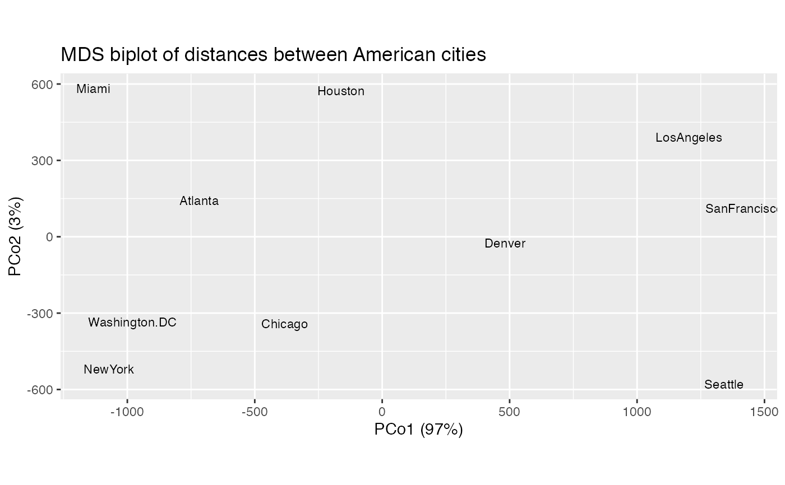
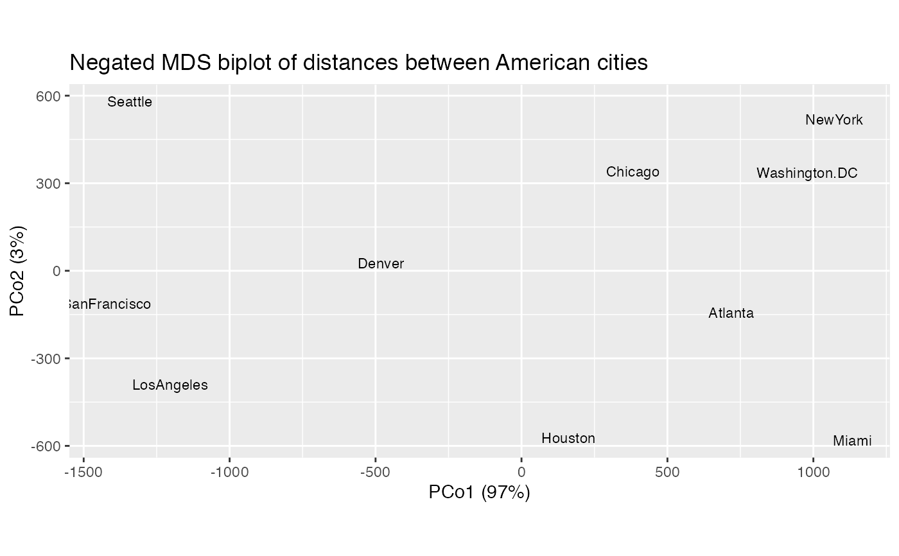
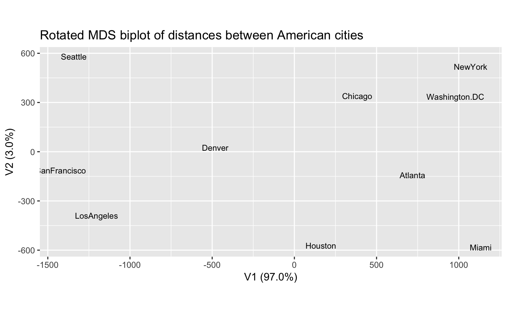
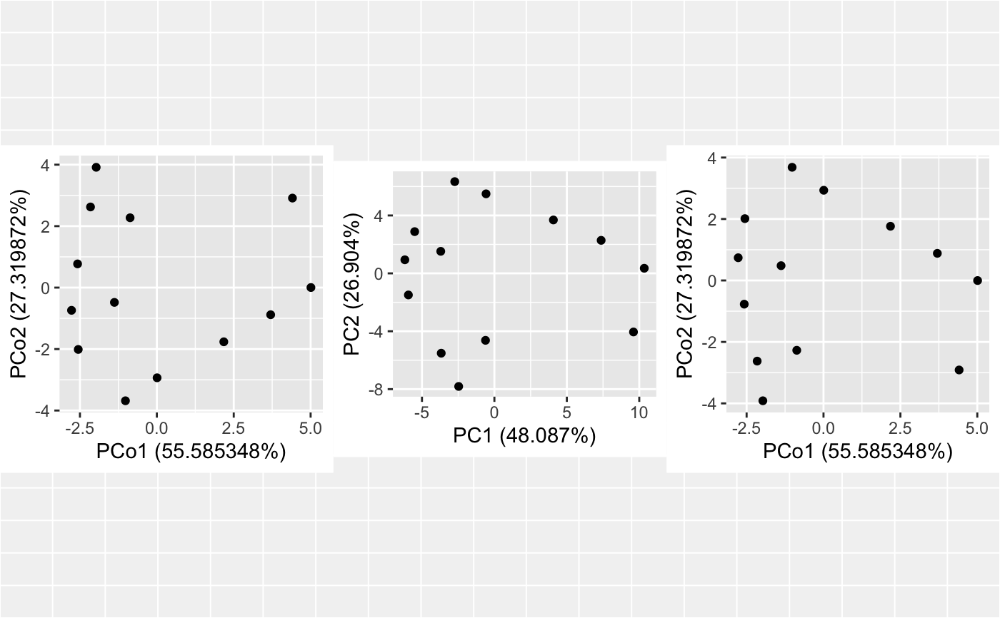
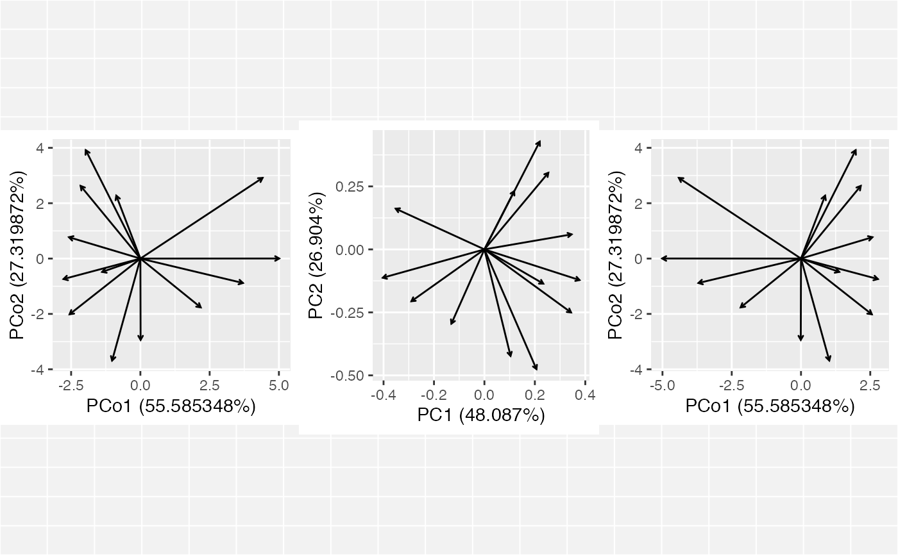
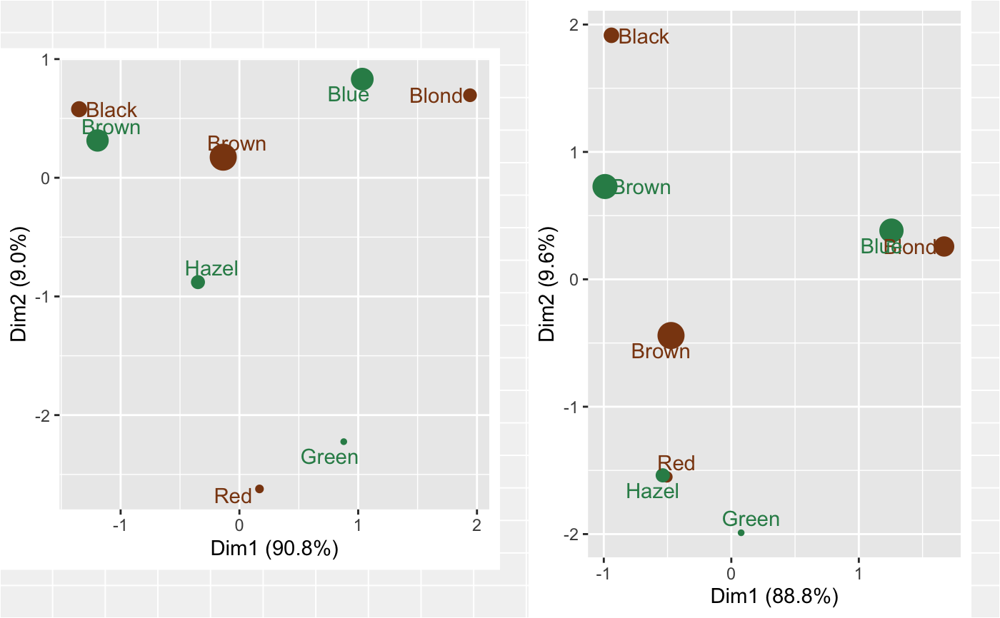
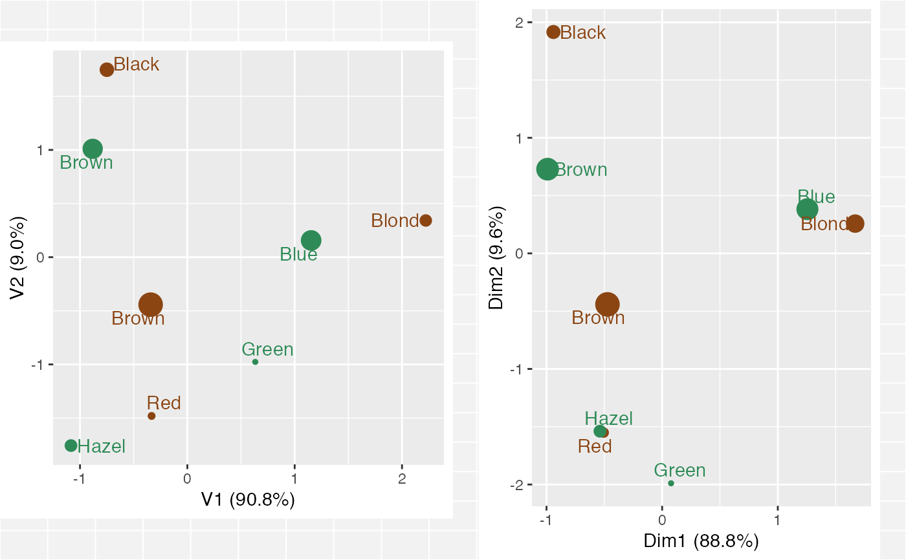

alignment.RdAlign one ordination to another having the same cases or variables.
get_alignment(x) revert_alignment(x) negate_ord(x, negation = NULL) permute_ord(x, permutation = NULL) rotate_ord(x, rotation = NULL) negation_to(x, y) negate_to(x, y, .matrix) negate_to_nonneg_orthant(x, .matrix) permutation_to(x, y, abs.values = FALSE) permute_to(x, y, .matrix) rotation_to(x, y) rotate_to(x, y, .matrix) align_to(x, y, .matrix, method = c("negate", "permute", "rotate"))
| x, y | Matrices or tbl_ords; |
|---|---|
| negation, permutation, rotation | Numeric or character vector of coordinates to negate or permute, or a matrix that performs an operation by right-multiplication. |
| .matrix | A character string matching one of several indicators for one
or both matrices in a matrix decomposition used for ordination. The
standard values are |
| abs.values | Whether |
| method | Character, one of |
For purposes of comparison and visualization, it can be useful to transform
the (already artificial) coordinates of an ordination, either by fixed
criteria or to better align with another basis (matrix) of coordinates.
negate_ord(), permute_ord(), and rotate_ord() allow the user to
manually transform the coordinates of an ordination by specifying the
coordinates to be negated or permuted, or by providing the rotation matrix.
negate_to(), permute_to(), and rotate_to() manipulate the coordinates
of one ordination so that the positions of the cases or variables align, as
closely as possible, to those of the same cases or variables in another
ordination. In the case of negation and permutation, this is done by
minimizing the angles between vectors of scores or loadings in the respective
coordinates. In the case of rotation, this is done by invoking the singular
value decomposition method of point cloud registration (Bellekens &al, 2014).
The helper functions negation_to(), permutation_to(), and rotation_to()
take only matrix inputs and return matrices that perform the specified
transformations.
get_alignment() accesses the alignment matrix of an ordination; after
multiple transformations, this matrix will be their composition (product).
revert_alignment() undoes all alignments. Currently alignments are stored
as an "align" attribute.
Bellekens B, Spruyt V, Berkvens R, & Weyn M (2014) "A survey of rigid 3D pointcloud registration algorithms". Fourth International Conference on Ambient Computing, Applications, Services and Technologies, Proceedings: 8--13. https://biblio.ugent.be/publication/5713477
# Align MDS for distances between American cities with compass orientation UScitiesD %>% cmdscale_ord(k = 2) %>% as_tbl_ord() %>% augment() %>% print() -> usa_mds#> # A tbl_ord of class 'cmds_ord': (10 x 2) x (10 x 2)' #> # 2 coordinates: PCo1 and PCo2 #> # #> # Rows: [ 10 x 2 | 1 ] #> PCo1 PCo2 | .name #> | <chr> #> 1 -719. 143. | 1 Atlanta #> 2 -382. -341. | 2 Chicago #> 3 482. -25.3 | 3 Denver #> 4 -161. 573. | 4 Houston #> 5 1204. 390. | 5 LosAngeles #> 6 -1134. 582. | 6 Miami #> 7 -1072. -519. | 7 NewYork #> 8 1421. 113. | 8 SanFrancisco #> 9 1342. -580. | 9 Seattle #> 10 -980. -335. | 10 Washington.DC #> # #> # Columns: [ 10 x 2 | 1 ] #> PCo1 PCo2 | .name #> | <chr> #> 1 -719. 143. | 1 Atlanta #> 2 -382. -341. | 2 Chicago #> 3 482. -25.3 | 3 Denver #> 4 -161. 573. | 4 Houston #> 5 1204. 390. | 5 LosAngeles #> 6 -1134. 582. | 6 Miami #> 7 -1072. -519. | 7 NewYork #> 8 1421. 113. | 8 SanFrancisco #> 9 1342. -580. | 9 Seattle #> 10 -980. -335. | 10 Washington.DCusa_mds %>% ggbiplot() + geom_cols_text(aes(label = .name), size = 3) + ggtitle("MDS biplot of distances between American cities")get_alignment(usa_mds)#> PCo1 PCo2 #> [1,] 1 0 #> [2,] 0 1#> # A tbl_ord of class 'cmds_ord': (10 x 2) x (10 x 2)' #> # 2 coordinates, transformed: PCo1 and PCo2 #> # #> # Rows: [ 10 x 2 | 1 ] #> PCo1 PCo2 | .name #> | <chr> #> 1 719. -143. | 1 Atlanta #> 2 382. 341. | 2 Chicago #> 3 -482. 25.3 | 3 Denver #> 4 161. -573. | 4 Houston #> 5 -1204. -390. | 5 LosAngeles #> 6 1134. -582. | 6 Miami #> 7 1072. 519. | 7 NewYork #> 8 -1421. -113. | 8 SanFrancisco #> 9 -1342. 580. | 9 Seattle #> 10 980. 335. | 10 Washington.DC #> # #> # Columns: [ 10 x 2 | 1 ] #> PCo1 PCo2 | .name #> | <chr> #> 1 719. -143. | 1 Atlanta #> 2 382. 341. | 2 Chicago #> 3 -482. 25.3 | 3 Denver #> 4 161. -573. | 4 Houston #> 5 -1204. -390. | 5 LosAngeles #> 6 1134. -582. | 6 Miami #> 7 1072. 519. | 7 NewYork #> 8 -1421. -113. | 8 SanFrancisco #> 9 -1342. 580. | 9 Seattle #> 10 980. 335. | 10 Washington.DCget_alignment(usa_mds_negate)#> PCo1 PCo2 #> [1,] -1 0 #> [2,] 0 -1usa_mds_negate %>% ggbiplot() + geom_cols_text(aes(label = .name), size = 3) + ggtitle("Negated MDS biplot of distances between American cities")#> Warning: The `x` argument of `as_tibble.matrix()` must have unique column names if `.name_repair` is omitted as of tibble 2.0.0. #> Using compatibility `.name_repair`. #> This warning is displayed once every 8 hours. #> Call `lifecycle::last_warnings()` to see where this warning was generated.#> # A tbl_ord of class 'cmds_ord': (10 x 2) x (10 x 2)' #> # 2 coordinates, transformed: V1 and V2 #> # #> # Rows: [ 10 x 2 | 1 ] #> V1 V2 | .name #> | <chr> #> 1 719. -143. | 1 Atlanta #> 2 382. 341. | 2 Chicago #> 3 -482. 25.3 | 3 Denver #> 4 161. -573. | 4 Houston #> 5 -1204. -390. | 5 LosAngeles #> 6 1134. -582. | 6 Miami #> 7 1072. 519. | 7 NewYork #> 8 -1421. -113. | 8 SanFrancisco #> 9 -1342. 580. | 9 Seattle #> 10 980. 335. | 10 Washington.DC #> # #> # Columns: [ 10 x 2 | 1 ] #> V1 V2 | .name #> | <chr> #> 1 719. -143. | 1 Atlanta #> 2 382. 341. | 2 Chicago #> 3 -482. 25.3 | 3 Denver #> 4 161. -573. | 4 Houston #> 5 -1204. -390. | 5 LosAngeles #> 6 1134. -582. | 6 Miami #> 7 1072. 519. | 7 NewYork #> 8 -1421. -113. | 8 SanFrancisco #> 9 -1342. 580. | 9 Seattle #> 10 980. 335. | 10 Washington.DCget_alignment(usa_mds_rotate)#> [,1] [,2] #> [1,] -1 0 #> [2,] 0 -1usa_mds_rotate %>% ggbiplot() + geom_cols_text(aes(label = .name), size = 3) + ggtitle("Rotated MDS biplot of distances between American cities")# Align an MDS ordination to a PCA ordination data(country_differences) country_differences %>% cmdscale_ord(k = 2) %>% as_tbl_ord() %>% print() -> differences_cmds#> # A tbl_ord of class 'cmds_ord': (13 x 2) x (13 x 2)' #> # 2 coordinates: PCo1 and PCo2 #> # #> # Rows: [ 13 x 2 | 0 ] #> PCo1 PCo2 | #> | #> 1 0.00781 -2.94 | #> 2 -1.02 -3.68 | #> 3 3.70 -0.883 | #> 4 -2.56 -2.01 | #> 5 4.41 2.91 | #> #> # #> # Columns: [ 13 x 2 | 0 ] #> PCo1 PCo2 | #> | #> 1 0.00781 -2.94 | #> 2 -1.02 -3.68 | #> 3 3.70 -0.883 | #> 4 -2.56 -2.01 | #> 5 4.41 2.91 | #>#> # A tbl_ord of class 'prcomp': (13 x 13) x (13 x 13)' #> # 13 coordinates: PC1, PC2, ..., PC13 #> # #> # Rows: [ 13 x 13 | 0 ] #> PC1 PC2 PC3 ... | #> | #> 1 -0.576 5.50 3.17 | #> 2 -2.74 6.34 -0.0599 ... | #> 3 7.37 2.28 -1.22 | #> 4 -5.50 2.88 -1.06 | #> 5 9.60 -4.05 -3.03 | #> #> # #> # Columns: [ 13 x 13 | 0 ] #> PC1 PC2 PC3 ... | #> | #> 1 0.104 -0.423 -0.340 | #> 2 0.206 -0.475 -0.00197 ... | #> 3 -0.289 -0.206 0.121 | #> 4 0.343 -0.250 0.102 | #> 5 -0.352 0.161 0.302 | #># negate PCA cases to MDS coordinates differences_cmds %>% negate_to(differences_pca, "rows") %>% print() -> differences_align_rows#> # A tbl_ord of class 'cmds_ord': (13 x 2) x (13 x 2)' #> # 2 coordinates, transformed: PCo1 and PCo2 #> # #> # Rows: [ 13 x 2 | 0 ] #> PCo1 PCo2 | #> | #> 1 0.00781 2.94 | #> 2 -1.02 3.68 | #> 3 3.70 0.883 | #> 4 -2.56 2.01 | #> 5 4.41 -2.91 | #> #> # #> # Columns: [ 13 x 2 | 0 ] #> PCo1 PCo2 | #> | #> 1 0.00781 2.94 | #> 2 -1.02 3.68 | #> 3 3.70 0.883 | #> 4 -2.56 2.01 | #> 5 4.41 -2.91 | #>plot(gridExtra::arrangeGrob(grobs = list( ggbiplot(differences_cmds) + geom_rows_point(), ggbiplot(differences_pca) + geom_rows_point(), ggbiplot(differences_align_rows) + geom_rows_point() ), ncol = 3))# negate PCA variables to MDS coordinates differences_cmds %>% negate_to(differences_pca, "cols") %>% print() -> differences_align_cols#> # A tbl_ord of class 'cmds_ord': (13 x 2) x (13 x 2)' #> # 2 coordinates, transformed: PCo1 and PCo2 #> # #> # Rows: [ 13 x 2 | 0 ] #> PCo1 PCo2 | #> | #> 1 -0.00781 -2.94 | #> 2 1.02 -3.68 | #> 3 -3.70 -0.883 | #> 4 2.56 -2.01 | #> 5 -4.41 2.91 | #> #> # #> # Columns: [ 13 x 2 | 0 ] #> PCo1 PCo2 | #> | #> 1 -0.00781 -2.94 | #> 2 1.02 -3.68 | #> 3 -3.70 -0.883 | #> 4 2.56 -2.01 | #> 5 -4.41 2.91 | #>plot(gridExtra::arrangeGrob(grobs = list( ggbiplot(differences_cmds) + geom_cols_vector(), ggbiplot(differences_pca) + geom_cols_vector(), ggbiplot(differences_align_cols) + geom_cols_vector() ), ncol = 3))# Compare relative frequences of hair and eye colors among men versus women data(HairEyeColor) HairEyeColor[, , "Male"] %>% ca::ca() %>% as_tbl_ord() %>% print() -> male_haireye_ca#> # A tbl_ord of class 'ca': (4 x 3) x (4 x 3)' #> # 3 coordinates: Dim1, Dim2, Dim3 #> # #> # Rows: [ 4 x 3 | 0 ] #> Dim1 Dim2 Dim3 | #> | #> 1 -1.35 0.578 -1.35 | #> 2 -0.136 0.173 0.950 | #> 3 0.169 -2.62 -0.550 | #> 4 1.94 0.695 -0.901 | #> # #> # Columns: [ 4 x 3 | 0 ] #> Dim1 Dim2 Dim3 | #> | #> 1 -1.19 0.314 -0.567 | #> 2 1.03 0.831 0.0457 | #> 3 -0.349 -0.880 2.01 | #> 4 0.878 -2.22 -1.32 |#> # A tbl_ord of class 'ca': (4 x 3) x (4 x 3)' #> # 3 coordinates: Dim1, Dim2, Dim3 #> # #> # Rows: [ 4 x 3 | 0 ] #> Dim1 Dim2 Dim3 | #> | #> 1 -0.940 1.92 -0.683 | #> 2 -0.473 -0.441 0.878 | #> 3 -0.505 -1.55 -2.19 | #> 4 1.67 0.258 -0.111 | #> # #> # Columns: [ 4 x 3 | 0 ] #> Dim1 Dim2 Dim3 | #> | #> 1 -0.990 0.728 -0.232 | #> 2 1.26 0.382 0.149 | #> 3 -0.538 -1.54 1.77 | #> 4 0.0772 -1.99 -2.27 |ca_biplot <- function(ord) { ggbiplot(ord, aes(label = .name)) + geom_rows_point(aes(size = .mass), color = "saddlebrown") + geom_cols_point(aes(size = .mass), color = "seagreen4") + geom_rows_text_repel(color = "saddlebrown") + geom_cols_text_repel(color = "seagreen4") + guides(size = "none") } plot(gridExtra::arrangeGrob(grobs = list( ca_biplot(male_haireye_ca), ca_biplot(female_haireye_ca) ), ncol = 2))# negation, permutation, and rotation male_haireye_ca %>% negate_to(female_haireye_ca, "rows") %>% get_alignment()#> Dim1 Dim2 Dim3 #> [1,] 1 0 0 #> [2,] 0 1 0 #> [3,] 0 0 1male_haireye_ca %>% permute_to(female_haireye_ca, "rows") %>% get_alignment()#> Dim1 Dim2 Dim3 #> [1,] 1 0 0 #> [2,] 0 1 0 #> [3,] 0 0 1male_haireye_ca %>% rotate_to(female_haireye_ca, "rows") %>% get_alignment()#> [,1] [,2] [,3] #> [1,] 0.9311875 -0.3635598 0.02672095 #> [2,] 0.2438220 0.6756385 0.69574671 #> [3,] -0.2709993 -0.6413555 0.71779002plot(gridExtra::arrangeGrob(grobs = list( ca_biplot(rotate_to(male_haireye_ca, female_haireye_ca, "rows")), ca_biplot(female_haireye_ca) ), ncol = 2))